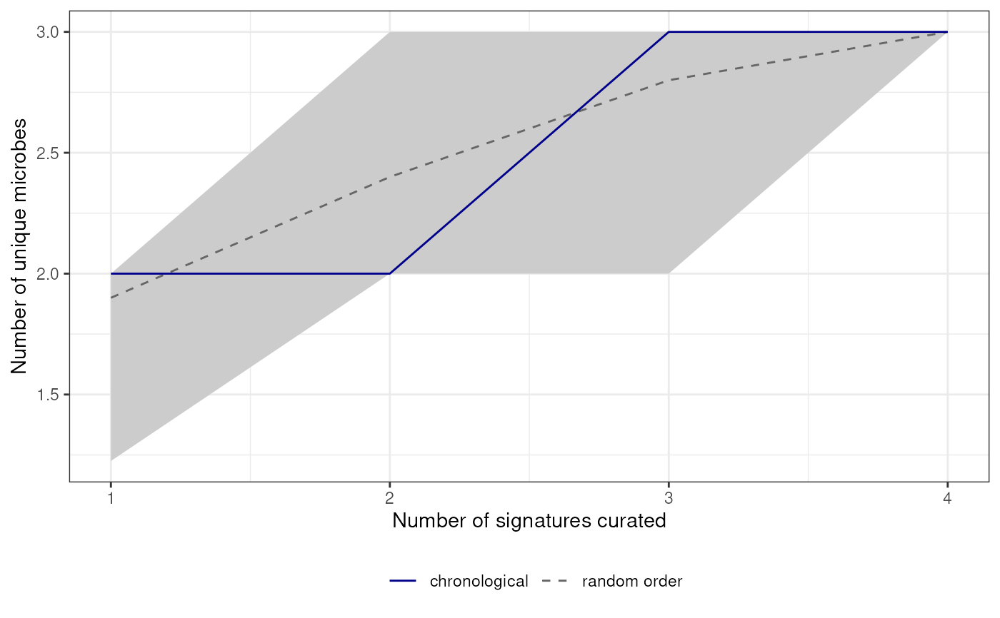

A collector's curve (species accumulation curve) shows the cumulative number of unique taxa observed as a function of sampling effort, here the number of signatures or papers curated, rather than calendar time. A curve that levels off indicates that newly curated signatures/papers mostly report taxa that are already in the database.
Usage
plotCollectorsCurve(
dat,
by = c("signatures", "papers"),
tax.level = "mixed",
exact.tax.level = FALSE,
date.col = "Curated date",
n.perm = 100
)Arguments
- dat
a
data.framestoring BugSigDB data.- by
character. Unit of sampling effort on the x-axis: either
"signatures"or"papers"(grouped by PMID; signatures without a PMID are grouped by"Study").- tax.level
character. Taxonomic level at which unique taxa are counted, e.g.
"species"or"genus". Defaults to"mixed", i.e. taxa are counted at the level they were reported. SeerestrictTaxLevel.- exact.tax.level
logical. Should only taxa reported exactly at
tax.levelbe counted (TRUE), or should taxa below it be summarized up totax.level(FALSE)?- date.col
character. Column of
datholding the curation date, used to order signatures chronologically. Accepts ISO ("2021-01-10") or BugSigDB ("10 January 2021") dates; signatures with missing or unparseable dates are placed last.- n.perm
integer. Number of random orderings of the signatures/papers used to compute the expected curve and its 95% interval. Use
0to plot only the observed, chronological curve.
Examples
dat <- data.frame(PMID = c(1, 1, 2, 3),
Study = paste("Study", c(1, 1, 2, 3)),
`Curated date` = c("2021-01-10", "2021-01-10",
"2021-02-01", "2021-03-05"),
check.names = FALSE)
dat[["MetaPhlAn taxon names"]] <- list(c("a", "b"), "b", c("b", "c"), "a")
plotCollectorsCurve(dat, by = "signatures", n.perm = 10)
